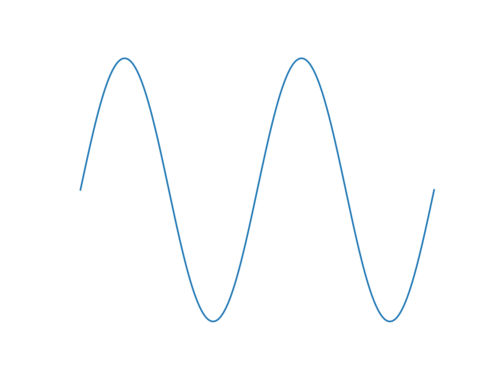
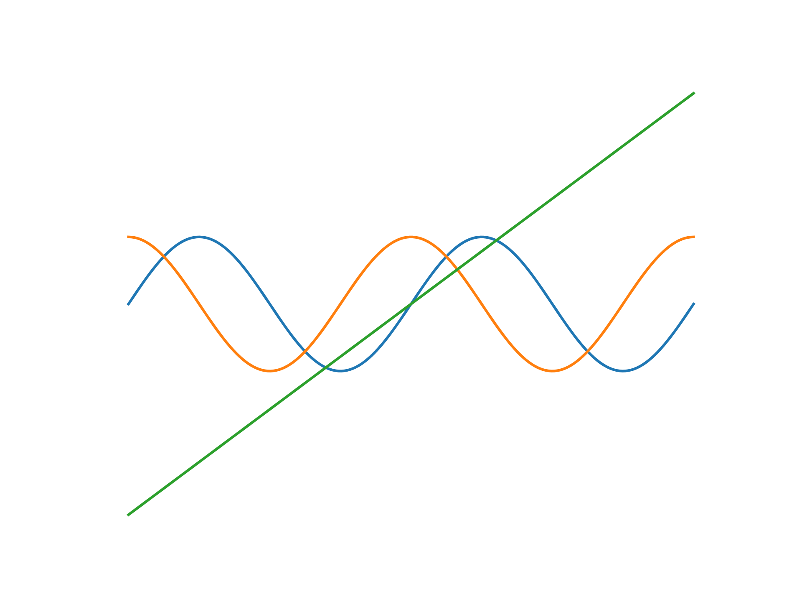

If you are a mathematician, you might have heard of graphs with functions, such as f(x)=2x. Now, SuperBot is able to
make these graphs, like a graphing calculator. However, please be aware that Python syntax is different from mathematical
notations.
For example, using =graph 2*x_:
The math, numpy (as np) and random (as ra) modules are imported. Here shows =graph np.sin(x_) with bounds ±6.283:
Why limit yourself to 1 graph per image? Use =multigraph np.sin(x_);np.cos(x_);x_/2 -6.283 6.283:
You might have noticed a flaw: the axes aren't equalized - the same pixel distance in both axes have different actual distances. To fix this, supply a Boolean at the end, such as =graph np.sin(x_) -6.283 6.283 y: